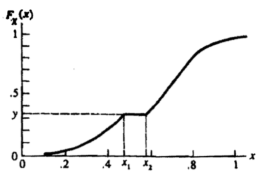

[统计推断]第二章·变换和期望
1 随机变量函数的分布
1.1 随机变量的函数
设 \(X\) 是一随机变量且累积分布函数为 \(F_X(x)\)，则 \(Y=g(X)\) 也是随机变量。
设 \(g(x):\mathcal X\to\mathcal Y\)，定义逆映射： \[ g^{-1}(A)=\{x\in\mathcal X:g(x)\in A\} \] 注意这个定义将集合映射到集合。即便 \(g(x)\) 不是单调函数，\(g^{-1}\) 也有定义。
在上述定义下，任给集合 \(A\subset \mathcal Y\)，则有：\(P(Y\in A)=P(\{x\in\mathcal X:g(x)\in A\})=P(X\in g^{-1}(A))\).
若 \(X\) 与 \(Y\) 都是连续随机变量，则常用的推导 \(Y\) 的 cdf 的方式是： \[ F_Y(y)=P(Y\leq y)=P(g(X)\leq y)=P(\{x\in X:g(x)\leq y\})=\int_{\{x\in X:g(x)\leq y\}}p_X(x)\mathrm dx \]
例【伽玛概率密度函数和逆伽玛概率密度函数】设 \(f_X(x)\) 为伽玛概率密度函数： \[f_X(x)=\frac{1}{(n-1)!\beta^n}x^{n-1}e^{-x/\beta},\quad 0<x<+\infty\] 其中 \(\beta\) 是某大于零的常数，\(n\) 是一正整数。现求 \(Y=g(X)=\frac{1}{X}\) 的概率密度函数。那么： \[F_Y(y)=P(Y\leq y)=P\left(X\geq 1/y\right)=1-P\left(X\leq1/y\right)=1-F_X(1/y)\] 故： \[f_Y(y)=\frac{\mathrm dF_Y(y)}{\mathrm dy}=\frac{f_X(1/y)}{y^2}=\frac{1}{(n-1)!\beta^n}\left(\frac{1}{y}\right)^{n+1}e^{-1/(\beta y)}\] 这就是逆伽玛概率密度函数（的一个特例）。
在对随机变量进行变换时，需要明确随机变量的样本空间，常取： \[ \mathcal X=\{x:f_X(x)>0\}\quad \mathcal Y=\{y:\exists x,\,y=g(x)\} \] 上述 \(\mathcal X\) 也称作随机变量 \(X\) 的分布的支撑集（support set），即 \(f_X(x)\) 取值为正的地方。
1.2 随机变量的单调函数
单调情形非常常见，因此特意拿出来推导一下。设 \(f_X(x)\) 是 \(\mathcal X\) 上的连续函数，\(g^{-1}(y)\) 在 \(\mathcal Y\) 上有连续导数，则： \[ F_Y(y)=P(Y\leq y)=\begin{cases}P(X\leq g^{-1}(y))=F_X(g^{-1}(y))&&\text{若 }g\text{ 是增函数}\\P(X\geq g^{-1}(y))=1-F_X(g^{-1}(y))&&\text{若 }g\text{ 是减函数}\end{cases} \] 求导可以得到： \[ f_Y(y)=f_X(g^{-1}(y))\left|\frac{\mathrm d}{\mathrm dy}g^{-1}(y)\right|,\quad y\in\mathcal Y \]
例【均匀分布与指数分布的联系】设 \(X\) 服从 \((0,1)\) 上的均匀分布，\(Y=g(X)=-\log X\)，则 \(g^{-1}(y)=e^{-y}\)，于是 \[F_Y(y)=1-F_X(g^{-1}(y))=1-F_X(e^{-y})=1-e^{-y}\] 或直接计算 pdf： \[f_Y(y)=f_X(g^{-1}(y))\left|\frac{\mathrm d}{\mathrm dy}g^{-1}(y)\right|=e^{-y}f_X(e^{-y})=e^{-y}\] 因而 \(Y\) 服从参数为 \(1\) 的指数分布。
1.3 概率积分变换
定理：设随机变量 \(X\) 有连续累积分布函数 \(F_X(x)\)。令 \(Y=F_X(X)\)，则 \(Y\sim U(0, 1)\)，即 \(P(Y\leq y)=y,0<y<1\).
在证明前，首先定义 \(F_X\) 的逆 \(F_X^{-1}\)。鉴于 \(F_X\) 不一定严格单调递增，我们定义累积分布函数的逆如下： \[ F^{-1}_X(y)=\inf\{x:F_X(x)\geq y\} \] 如此，在下图的情况下，有 \(F_X^{-1}(y)=x_1\)。

接下来我们完成证明： \[ \begin{align} P(Y\leq y)&=P(F_X(X)\leq y)\\ &=P(F_X^{-1}(F_X(X))\leq F_X^{-1}(y))&&\text{因为 }F_X^{-1}\text{ 是增函数}\\ &=P(X\leq F_X^{-1}(y))&&\text{理由见下文}\\ &=F_X(F_X^{-1}(y))&&F_X\text{ 的定义}\\ &=y \end{align} \] 对于第三个等号，如果 \(F_X\) 严格递增，那么 \(F_X^{-1}(F_X(x))=x\)，等式显然成立；如果不是严格递增，例如上面图中对于 \(x\in[x_1,x_2]\) 一段，都有 \(F_X^{-1}(F_X(x))=x_1\)，但由于 \(P(X\leq x)=P(X\leq x_1)\)，所以等式依旧成立。
利用概率积分变换定理，我们可以根据给定的概率分布构造相应的随机样本。如果我们想构造 \(X\) 使其具有累积分布函数 \(F_X\)，则只需要首先构造 \((0,1)\) 上的均匀分布，再从 \(F_X(x)=U\) 中解出 \(x\)。这是一种能广泛应用的构造方法。
注记：这个定理叫做概率积分变换，但上文没看到积分呢？其实“积分”出现在：\(Y=F_X(X)=\int_{-\infty}^{X}f_X(t)\mathrm dt\)。直观来说，\(Y\) 是 \((-\infty,X)\) 上 pdf 曲线下的面积。
该定理在图像处理领域的直方图均衡化/规定化中也有应用，只不过应用的是这个定理的离散形式，详见《数字图像处理》3.3 节。
2 期望
2.1 期望
\[ \newcommand{\E}{\mathbb E} \newcommand{\Var}{\mathrm{Var}} \E g(X)=\begin{cases} \int_{-\infty}^{+\infty}g(x)f_X(x)\mathrm dx&&X\text{ 连续}\\ \sum_{x\in\mathcal X}g(x)f_X(x)\mathrm dx&&X\text{ 离散}\\ \end{cases} \]
如果 \(\E |g(X)|=+\infty\)，称 \(\E g(X)\) 不存在。注意这有个绝对值。一个经典的期望不存在的随机变量是柯西(Cauchy)随机变量。
为什么有个绝对值？因为在期望的定义式中，为了避免由于求和（积分）顺序的改变而导致结果改变，应要求期望是绝对收敛而非条件收敛的。
指数期望：\(f_X(x)=\frac{1}{\lambda}e^{-x/\lambda},\,0\leq x<\infty,\,\lambda>0\implies \E X=\lambda\)
二项期望：\(f_X(x)=\binom{n}{x}p^x(1-p)^{n-x}\implies \E X=np\)
柯西期望：\(f_X(x)=\frac{1}{\pi}\frac{1}{1+x^2}\implies \E |X|=+\infty\)
2.2 距离最小化
如果我们用 \((X-b)^2\) 来度量随机变量 \(X\) 与常数 \(b\) 之间的距离，则可以通过求使得 \(\E(X-b)^2\) 最小的 \(b\) 作为 \(X\) 的估计。由于： \[ \begin{align} \E(X-b)^2&=\E(X-\E X+\E X-b)^2\\ &=\E(X-\E X)^2+2\E[(X-\E X)(\E X-b)]+\E(\E X-b)^2\\ &=\E(X-\E X)^2+2(\E X-b)\E(X-\E X)+(\E X-b)^2\\ &=\E(X-\E X)^2+(\E X-b)^2 \end{align} \] 其中第一项与 \(b\) 无关，第二项非负且当 \(\E X=b\) 时取到 \(0\)，因此： \[ \min_b\E(X-b)^2=\E(X-\E X)^2 \] 这意味着我们应取 \(b=\E X\).
但是如果用 \(|X-b|\) 来作为距离的度量，结论还会一样吗？下面假设 \(X\) 是连续随机变量。 \[ \begin{align} \E|X-b|&=\int_{-\infty}^{+\infty}|X-b|f(x)\mathrm dx\\ &=\int_{-\infty}^{b}(b-x)f(x)\mathrm dx+\int_{b}^{+\infty}(x-b)f(x)\mathrm dx\\ &=\left(\int_{b}^{+\infty}xf(x)\mathrm dx-\int_{-\infty}^{b}xf(x)\mathrm dx\right)+b\left(\int_{-\infty}^{b}f(x)\mathrm dx-\int_{b}^{+\infty}f(x)\mathrm dx\right) \end{align} \] 对 \(b\) 求导得： \[ \begin{align} \frac{\mathrm d\E|X-b|}{\mathrm db}&=-bf(b)-bf(b)+\int_{-\infty}^b f(x)\mathrm dx-\int_b^{+\infty}f(x)\mathrm dx+b(f(b)+f(b))\\ &=\int_{-\infty}^b f(x)\mathrm dx-\int_b^{+\infty}f(x)\mathrm dx \end{align} \] 令其为零： \[ \int_{-\infty}^b f(x)\mathrm dx=\int_b^{+\infty}f(x)\mathrm dx \] 又因为二者相加为 \(1\)，所以最优的 \(b\) 是随机变量 \(X\) 的中位数 \(m\)： \[ \int_{-\infty}^m f(x)\mathrm dx=\int_m^{+\infty}f(x)\mathrm dx=\frac{1}{2} \]
3 矩和矩母函数
3.1 矩
概率分布的矩是一类重要的期望。对任意整数 \(n\)，\(X\) 的 \(n\) 阶矩和\(n\) 阶中心矩分别为： \[ \mu_n'=\E X^n,\quad \mu_n=\E(X-\E X)^n \] 其中二阶中心矩即是方差 \(\Var X=\E(X-\E X)^2\).
指数方差：\(\Var X=\lambda^2\)
二项方差：\(\Var X=np(1-p)\)
3.2 矩母函数
设随机变量 \(X\) 的 cdf 为 \(F_X\)，则矩母函数（moment generating function, mgf）定义为： \[ M_X(t)=\E[e^{tX}]=\begin{cases} \int_{-\infty}^{+\infty}e^{tx}f_X(x)\mathrm dx&&X\text{ 连续}\\ \sum_x e^{tx}f_X(x)&&X\text{ 离散} \end{cases} \] 这里假设 \(t\) 在 \(0\) 的某邻域内时上式中的期望存在。如果在 \(0\) 的任意邻域内该期望都不存在，称矩母函数不存在。
从矩母函数可以计算矩： \[ \E X^n=\left.\frac{\mathrm d^n}{\mathrm d t^n}M_X(t)\right|_{t=0} \] 以连续随机变量为例证明：假设求导可放入积分（下一节叙述），则： \[ \frac{\mathrm d^n}{\mathrm d t^n}M_X(t)=\int_{-\infty}^{+\infty} \frac{\mathrm d^n e^{tx}}{\mathrm d t^n}f_X(x)\mathrm dx=\int_{-\infty}^{+\infty}x^n e^{tx}f_X(x)\mathrm dx=\E[X^ne^{tX}] \] 于是易得上述结论。
例【伽玛矩母函数】一般的伽玛概率密度函数的形式如下： \[f_X(x)=\frac{1}{\Gamma(\alpha)\beta^\alpha}x^{\alpha-1}e^{-x/\beta},\quad0<x<+\infty,\,\alpha>0,\,\beta>0\] 则矩母函数为： \[\begin{align}M_X(t)&=\E[e^{tX}]=\frac{1}{\Gamma(\alpha)\beta^\alpha}\int_0^{+\infty}x^{\alpha-1}e^{-x/\frac{\beta}{1-\beta t}}\mathrm dx\\&=\left(\frac{1}{1-\beta t}\right)^\alpha\int_0^{+\infty}\frac{1}{\Gamma(\alpha)(\frac{\beta}{1-\beta t})^\alpha}x^{\alpha-1}e^{-x/\frac{\beta}{1-\beta t}}\mathrm dx\\&=\left(\frac{1}{1-\beta t}\right)^\alpha\end{align}\] 最后一个等式成立是因为积分内是另一个伽玛概率密度函数的积分。
根据矩母函数，容易知道伽玛分布的期望是： \[\E X=\left.\frac{\mathrm d M_X(t)}{\mathrm dt}\right|_{t=0}=\alpha\beta\]
矩母函数的主要作用并不是求矩，而是在大多数情况下它唯一地确定了一个概率分布。与之相对的，仅确定了全部（无数个）矩并不能唯一确定概率分布。换句话说，存在两个不同的概率分布，它们所有的矩都相等。
但是当随机变量的支撑集有界时，全部矩就能唯一确定概率分布了。总结来说：
- 若 \(X,Y\) 的支撑集有界，则 \(\forall u,\,F_X(u)=F_Y(u)\) 当且仅当 \(\forall r=0,1,2,\ldots,\,\E X^r=\E Y^r\)
- 若 \(X,Y\) 矩母函数都存在，且对 \(0\) 的某邻域内的任意 \(t\)，都有 \(M_X(t)=M_Y(t)\)，则 \(\forall u, F_X(u)=F_Y(u)\)
4 积分号下的求导
统计学中经常会遇到交换积分与求导的顺序。
4.1 Leibnitz 法则
若 \(f(x,\theta),a(\theta),b(\theta)\) 都对 \(\theta\) 可导，则： \[ \frac{\mathrm d}{\mathrm d\theta}\int_{a(\theta)}^{b(\theta)} f(x,\theta)\mathrm dx=f(b(\theta),\theta)\cdot\frac{\mathrm d}{\mathrm d\theta}b(\theta)-f(a(\theta),\theta)\cdot\frac{\mathrm d}{\mathrm d\theta}a(\theta)+\int_{a(\theta)}^{b(\theta)}\frac{\partial}{\partial\theta}f(x,\theta)\mathrm dx \] 特别的，如果 \(a(\theta),b(\theta)\) 是常函数，得到 Leibnitz 法则的一个特例： \[ \frac{\mathrm d}{\mathrm d\theta}\int_a^bf(x,\theta)\mathrm dx=\int_a^b\frac{\partial}{\partial \theta}f(x,\theta)\mathrm dx \]
4.2 求导与积分互换的相关定理
将求导写作定义式，则： \[ \begin{align} &\int_{-\infty}^{+\infty}\frac{\partial}{\partial \theta}f(x,\theta)\mathrm dx=\int_{-\infty}^{+\infty}\lim_{\delta\to0}\left[\frac{f(x,\theta+\delta)-f(x,\theta)}{\delta}\right]\mathrm dx\\ &\frac{\mathrm d}{\mathrm d\theta}\int_{-\infty}^{+\infty}f(x,\theta)\mathrm dx=\lim_{\delta\to0}\int_{-\infty}^{+\infty}\left[\frac{f(x,\theta+\delta)-f(x,\theta)}{\delta}\right]\mathrm dx \end{align} \] 因此要证明求导和积分可以互换，只需证明求极限与积分可以互换。解决这个问题要用到超纲知识，因此这里直接给出结论。
定理：设对于任意 \(x\)，\(h(x,y)\) 在 \(y_0\) 处连续，并且存在函数 \(g(x)\) 满足：
- 对任意 \(x,y\) 有 \(|h(x,y)|\leq g(x)\)【\(g(x)\) 将 \(h(x,y)\) 控制住】
- \(\int_{-\infty}^{+\infty}g(x)\mathrm dx<+\infty\)【\(g(x)\) 有有限积分】
则： \[
\lim_{y\to y_0}\int_{-\infty}^{+\infty}h(x,y)\mathrm dx=\int_{-\infty}^{+\infty}\lim_{y\to y_0}h(x,y)\mathrm dx
\]
将这个定理套用到求导与积分互换问题中：假设 \(f(x,\theta)\) 在 \(\theta=\theta_0\) 处可导，那么把 \((f(x,\theta_0+\delta)-f(x,\theta_0))/\delta\) 视作 \(h(x,\delta)\)，得到求导与积分互换的条件是：存在函数 \(g(x,\theta_0)\) 和常数 \(\delta_0>0\)，使得
- 对任意 \(x\) 以及 \(|\delta|\leq\delta_0\)，有 \(\left|\frac{f(x,\theta_0+\delta)-f(x,\theta_0)}{\delta}\right|\leq g(x,\theta_0)\)
- \(\int_{-\infty}^{+\infty}g(x,\theta_0)\mathrm dx<+\infty\)
注意我们现在取 \(\theta\) 为某定值 \(\theta_0\)；另外，\(\delta_0\) 的引入是因为我们考虑的是导数，只需要足够小的 \(\delta\) 而不需要对所有 \(\delta\) 都成立。
上面第一个条件类似于 Lipschitz 条件，通过给出一阶导函数的界来约束函数的光滑性。
假若 \(f(x,\theta)\) 在任意 \(\theta\) 处可导，那么上述定理中的 \(\theta_0\) 可以全部换成 \(\theta\)。并且在这种情形下，条件 1 可以根据拉格朗日中值定理进一步改写为：对任意满足 \(|\theta'-\theta|\leq \delta_0\) 的 \(\theta'\) 有 \[ \left|\left.\frac{\partial}{\partial \theta}f(x,\theta)\right|_{\theta=\theta'}\right|\leq g(x,\theta) \]
4.3 求导与求和互换的相关定理
定理：设级数 \(\sum_{x=0}^{+\infty}h(\theta,x)\) 对任意实数区间 \((a,b)\) 内的 \(\theta\) 都收敛，并且：
- 对任意 \(x\)，\(\frac{\partial}{\partial \theta}h(\theta,x)\) 都是 \(\theta\) 的连续函数
- \(\sum_{x=0}^{+\infty}\frac{\partial}{\partial \theta}h(\theta,x)\) 在 \((a,b)\) 的任意闭有界子区间上都一致收敛
则： \[ \frac{\mathrm d}{\mathrm d\theta}\sum_{x=0}^{+\infty}h(\theta,x)=\sum_{x=0}^{+\infty}\frac{\partial}{\partial\theta}h(\theta,x) \]
4.4 求和与积分互换的相关定理
定理：设级数 \(\sum_{x=0}^{+\infty}h(\theta,x)\) 在 \([a,b]\) 上一致收敛，且对任意 \(x\)，\(h(\theta,x)\) 都是 \(\theta\) 的连续函数，则： \[ \int_a^b\sum_{x=0}^{+\infty}h(\theta,x)\mathrm d\theta=\sum_{x=0}^{+\infty}\int_a^bh(\theta,x)\mathrm d\theta \]